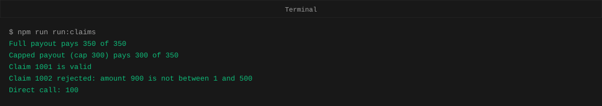
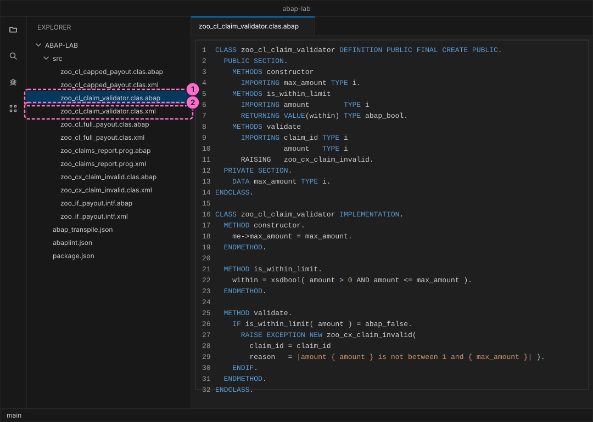
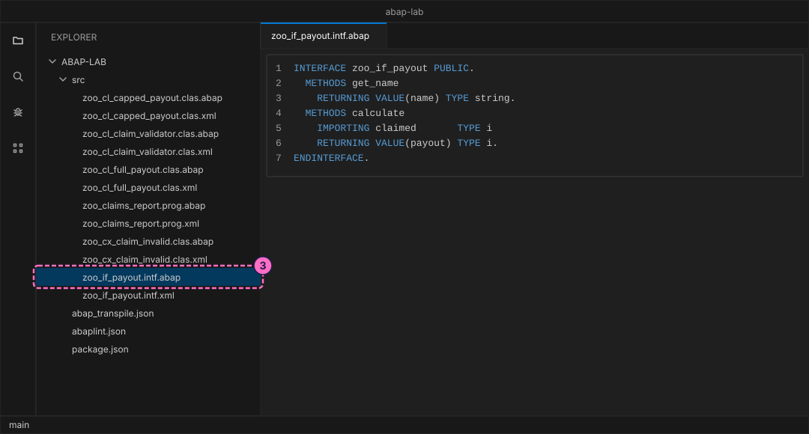
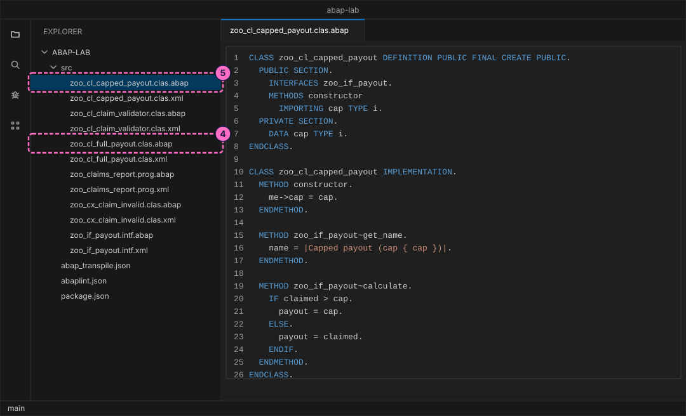
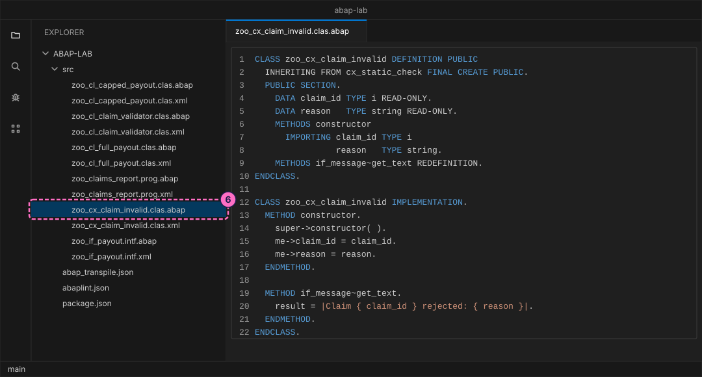
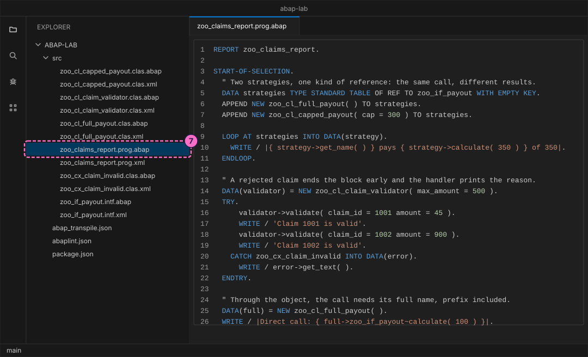
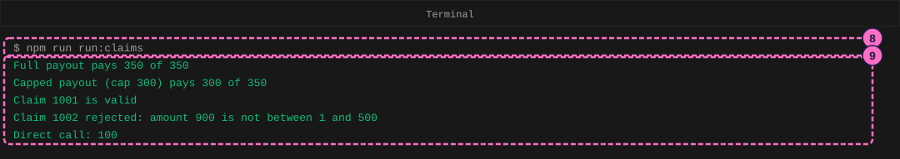
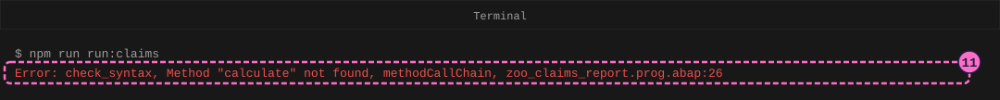

ABAP Guide: Classes, Interfaces and Exceptions
|
This content was generated with the assistance of AI and should be verified against the official documentation before being relied on in production. |
Checked on 2026-11-13 against open-abap 2.14.30 (the abaplint transpiler and runtime, open-abap-core a9acc41), abaplint 2.120.103 and Node.js 24.21.
What you build
You write four small global classes and one interface for the expense claims of the running example, and a report that uses them. The class zoo_cl_claim_validator decides whether a claim amount is acceptable. The interface zoo_if_payout describes how a payout is calculated, and two classes implement it in different ways: zoo_cl_full_payout pays the claimed amount and zoo_cl_capped_payout pays at most a fixed cap. The class zoo_cx_claim_invalid is your own exception, which the validator raises when an amount is not acceptable. The report zoo_claims_report calls everything and catches the exception with TRY and CATCH. You transpile the sources to JavaScript, run them on Node.js, read the output, and then make one deliberate mistake with an interface method to read the error message.
The playground is open-abap, a community open-source project, not SAP software. It runs only the part of the ABAP language that it implements, so a program that works here needs a check on a real SAP system before you rely on it there. Output is written with WRITE, the classic list statement, because the playground offers no other output.

Before you start
-
No account is needed: Node.js, the abaplint tools and open-abap install from the public npm registry without signing in. The licences you accept by installing (MIT for the abaplint packages) are listed in the README of the ABAP lab.
-
Set up the lab first, with the guide Set Up a Local ABAP Playground: the folder
abap-labwithnpm installdone, and an editor such as Visual Studio Code open on it. This guide adds files to itssrcfolder. Doing the guide Work with Internal Tables first is useful, because the report keeps its payout objects in a small table, but it is not required. -
The lab already holds the finished files of this guide in
modules/ROOT/examples/abap-lab/src/. Type them yourself rather than copying them, so that you meet the messages of this guide on your own screen. All names start withzoo_so that they do not collide with the files of the other guides. -
Read Classes and Objects for the words class, object and constructor, Interfaces, Inheritance and Polymorphism for what an interface is, and Class-Based Exceptions for the three exception categories.
-
The sample claim amounts are made up. The figures are drawings of the editor and the terminal, not screenshots. A highlighted box with a number marks the file or line of the step with the same number.
Steps
An ABAP object in the lab is stored as two files with the same name, the layout of the abapGit project: a .abap file with the source and a .xml file with the object’s attributes. A class is <name>.clas.abap plus <name>.clas.xml, an interface is <name>.intf.abap plus <name>.intf.xml, and a report is <name>.prog.abap plus <name>.prog.xml. The .xml files are short and only name the object, so the page shows one of each kind and you copy the pattern; the lab holds all of them.
The transpiler reads all files of src together, so a file may name a class that you write in a later step. Run nothing until step 8.
Write the claim validator
A class is a template for objects. The DEFINITION part lists what the class offers, grouped in sections: what is under PUBLIC SECTION can be used by every caller, and what is under PRIVATE SECTION only by the class itself. The IMPLEMENTATION part holds the code.
-
Create
src/zoo_cl_claim_validator.clas.abap. The constructor stores the highest amount that is allowed in the private attributemax_amount, andme->max_amountmeans the attribute of this object, to tell it apart from the parameter of the same name. The methodis_within_limitanswers true or false. The methodvalidatesays in its signature withRAISINGthat it may raisezoo_cx_claim_invalid, andRAISE EXCEPTIONraises it when the amount is not acceptable, with a reason built as a string template. The classzoo_cx_claim_invalidis written in step 6.CLASS zoo_cl_claim_validator DEFINITION PUBLIC FINAL CREATE PUBLIC. PUBLIC SECTION. METHODS constructor IMPORTING max_amount TYPE i. METHODS is_within_limit IMPORTING amount TYPE i RETURNING VALUE(within) TYPE abap_bool. METHODS validate IMPORTING claim_id TYPE i amount TYPE i RAISING zoo_cx_claim_invalid. PRIVATE SECTION. DATA max_amount TYPE i. ENDCLASS. CLASS zoo_cl_claim_validator IMPLEMENTATION. METHOD constructor. me->max_amount = max_amount. ENDMETHOD. METHOD is_within_limit. within = xsdbool( amount > 0 AND amount <= max_amount ). ENDMETHOD. METHOD validate. IF is_within_limit( amount ) = abap_false. RAISE EXCEPTION NEW zoo_cx_claim_invalid( claim_id = claim_id reason = |amount { amount } is not between 1 and { max_amount }| ). ENDIF. ENDMETHOD. ENDCLASS. -
Create the attribute file
src/zoo_cl_claim_validator.clas.xmlnext to it:<?xml version="1.0" encoding="utf-8"?> <abapGit version="v1.0.0" serializer="LCL_OBJECT_CLAS" serializer_version="v1.0.0"> <asx:abap xmlns:asx="http://www.sap.com/abapxml" version="1.0"> <asx:values> <VSEOCLASS> <CLSNAME>ZOO_CL_CLAIM_VALIDATOR</CLSNAME> <LANGU>E</LANGU> <DESCRIPT>Claim validator</DESCRIPT> <STATE>1</STATE> <FIXPT>X</FIXPT> <UNICODE>X</UNICODE> </VSEOCLASS> </asx:values> </asx:abap> </abapGit>
Describe the payouts with an interface
A payout can be calculated in more than one way. An interface lists the methods that every way must offer, without any code, so that the calling program can depend on the list and not on one class.
-
Create
src/zoo_if_payout.intf.abapand its attribute filesrc/zoo_if_payout.intf.xml. The interface has two methods,get_nameandcalculate, and no code.INTERFACE zoo_if_payout PUBLIC. METHODS get_name RETURNING VALUE(name) TYPE string. METHODS calculate IMPORTING claimed TYPE i RETURNING VALUE(payout) TYPE i. ENDINTERFACE.<?xml version="1.0" encoding="utf-8"?> <abapGit version="v1.0.0" serializer="LCL_OBJECT_INTF" serializer_version="v1.0.0"> <asx:abap xmlns:asx="http://www.sap.com/abapxml" version="1.0"> <asx:values> <VSEOINTERF> <CLSNAME>ZOO_IF_PAYOUT</CLSNAME> <LANGU>E</LANGU> <DESCRIPT>Payout strategy</DESCRIPT> <EXPOSURE>2</EXPOSURE> <STATE>1</STATE> <UNICODE>X</UNICODE> </VSEOINTERF> </asx:values> </asx:abap> </abapGit>
-
Create
src/zoo_cl_full_payout.clas.abapandsrc/zoo_cl_full_payout.clas.xml. The statementINTERFACES zoo_if_payoutsays that this class offers everything the interface lists, and the class must then implement each method. A method of an interface is written with the interface name, a tilde and the method name, as inzoo_if_payout~calculate. This strategy pays what was claimed.CLASS zoo_cl_full_payout DEFINITION PUBLIC FINAL CREATE PUBLIC. PUBLIC SECTION. INTERFACES zoo_if_payout. ENDCLASS. CLASS zoo_cl_full_payout IMPLEMENTATION. METHOD zoo_if_payout~get_name. name = `Full payout`. ENDMETHOD. METHOD zoo_if_payout~calculate. payout = claimed. ENDMETHOD. ENDCLASS.<?xml version="1.0" encoding="utf-8"?> <abapGit version="v1.0.0" serializer="LCL_OBJECT_CLAS" serializer_version="v1.0.0"> <asx:abap xmlns:asx="http://www.sap.com/abapxml" version="1.0"> <asx:values> <VSEOCLASS> <CLSNAME>ZOO_CL_FULL_PAYOUT</CLSNAME> <LANGU>E</LANGU> <DESCRIPT>Full payout strategy</DESCRIPT> <STATE>1</STATE> <FIXPT>X</FIXPT> <UNICODE>X</UNICODE> </VSEOCLASS> </asx:values> </asx:abap> </abapGit> -
Create
src/zoo_cl_capped_payout.clas.abapandsrc/zoo_cl_capped_payout.clas.xml. This strategy has a constructor that stores a cap, and itscalculatereturns the cap when the claimed amount is higher. The class implements the same interface, so the report can treat both classes alike.CLASS zoo_cl_capped_payout DEFINITION PUBLIC FINAL CREATE PUBLIC. PUBLIC SECTION. INTERFACES zoo_if_payout. METHODS constructor IMPORTING cap TYPE i. PRIVATE SECTION. DATA cap TYPE i. ENDCLASS. CLASS zoo_cl_capped_payout IMPLEMENTATION. METHOD constructor. me->cap = cap. ENDMETHOD. METHOD zoo_if_payout~get_name. name = |Capped payout (cap { cap })|. ENDMETHOD. METHOD zoo_if_payout~calculate. IF claimed > cap. payout = cap. ELSE. payout = claimed. ENDIF. ENDMETHOD. ENDCLASS.<?xml version="1.0" encoding="utf-8"?> <abapGit version="v1.0.0" serializer="LCL_OBJECT_CLAS" serializer_version="v1.0.0"> <asx:abap xmlns:asx="http://www.sap.com/abapxml" version="1.0"> <asx:values> <VSEOCLASS> <CLSNAME>ZOO_CL_CAPPED_PAYOUT</CLSNAME> <LANGU>E</LANGU> <DESCRIPT>Capped payout strategy</DESCRIPT> <STATE>1</STATE> <FIXPT>X</FIXPT> <UNICODE>X</UNICODE> </VSEOCLASS> </asx:values> </asx:abap> </abapGit>
Raise and catch your own exception
An exception is a signal that something went wrong and that the normal flow cannot continue. Your own exception is a class. Inheriting from cx_static_check makes it a static-check exception: a method that can raise it must declare it with RAISING, or the caller must catch it. The validator of step 1 declared it, so the report has to deal with it.
-
Create
src/zoo_cx_claim_invalid.clas.abapandsrc/zoo_cx_claim_invalid.clas.xml. The class inherits fromcx_static_check, keeps the claim number and the reason in read-only attributes, and redefinesif_message~get_text, the method that gives the readable message, so that the text names the claim and the reason. The constructor first calls the constructor of the superclass withsuper->constructor( ).CLASS zoo_cx_claim_invalid DEFINITION PUBLIC INHERITING FROM cx_static_check FINAL CREATE PUBLIC. PUBLIC SECTION. DATA claim_id TYPE i READ-ONLY. DATA reason TYPE string READ-ONLY. METHODS constructor IMPORTING claim_id TYPE i reason TYPE string. METHODS if_message~get_text REDEFINITION. ENDCLASS. CLASS zoo_cx_claim_invalid IMPLEMENTATION. METHOD constructor. super->constructor( ). me->claim_id = claim_id. me->reason = reason. ENDMETHOD. METHOD if_message~get_text. result = |Claim { claim_id } rejected: { reason }|. ENDMETHOD. ENDCLASS.<?xml version="1.0" encoding="utf-8"?> <abapGit version="v1.0.0" serializer="LCL_OBJECT_CLAS" serializer_version="v1.0.0"> <asx:abap xmlns:asx="http://www.sap.com/abapxml" version="1.0"> <asx:values> <VSEOCLASS> <CLSNAME>ZOO_CX_CLAIM_INVALID</CLSNAME> <LANGU>E</LANGU> <DESCRIPT>Invalid claim exception</DESCRIPT> <STATE>1</STATE> <FIXPT>X</FIXPT> <UNICODE>X</UNICODE> </VSEOCLASS> </asx:values> </asx:abap> </abapGit>
-
Create the report
src/zoo_claims_report.prog.abapandsrc/zoo_claims_report.prog.xml. The first part puts one object of each payout class into a table whose rows are references tozoo_if_payout, and the loop calls the same two methods on each. Which code runs depends on the object, not on the reference: this is polymorphism. The second part calls the validator insideTRY. Whenvalidateraises the exception for claim 1002, ABAP leaves theTRYblock at once, soClaim 1002 is validis never printed, and theCATCHblock stores the exception object inerrorand prints its text. The last two lines callcalculatethrough a reference to the class itself, where the name needs the interface prefix.REPORT zoo_claims_report. START-OF-SELECTION. " Two strategies, one kind of reference: the same call, different results. DATA strategies TYPE STANDARD TABLE OF REF TO zoo_if_payout WITH EMPTY KEY. APPEND NEW zoo_cl_full_payout( ) TO strategies. APPEND NEW zoo_cl_capped_payout( cap = 300 ) TO strategies. LOOP AT strategies INTO DATA(strategy). WRITE / |{ strategy->get_name( ) } pays { strategy->calculate( 350 ) } of 350|. ENDLOOP. " A rejected claim ends the block early and the handler prints the reason. DATA(validator) = NEW zoo_cl_claim_validator( max_amount = 500 ). TRY. validator->validate( claim_id = 1001 amount = 45 ). WRITE / 'Claim 1001 is valid'. validator->validate( claim_id = 1002 amount = 900 ). WRITE / 'Claim 1002 is valid'. CATCH zoo_cx_claim_invalid INTO DATA(error). WRITE / error->get_text( ). ENDTRY. " Through the object, the call needs its full name, prefix included. DATA(full) = NEW zoo_cl_full_payout( ). WRITE / |Direct call: { full->zoo_if_payout~calculate( 100 ) }|.<?xml version="1.0" encoding="utf-8"?> <abapGit version="v1.0.0" serializer="LCL_OBJECT_PROG" serializer_version="v1.0.0"> <asx:abap xmlns:asx="http://www.sap.com/abapxml" version="1.0"> <asx:values> <PROGDIR> <NAME>ZOO_CLAIMS_REPORT</NAME> <SUBC>1</SUBC> <RLOAD>E</RLOAD> <UCCHECK>X</UCCHECK> </PROGDIR> </asx:values> </asx:abap> </abapGit>Source: TRY (ABAP Keyword Documentation)

Transpile and run
-
In the terminal, in the
abap-labfolder, run the script that transpiles and then runs the report:npm run run:claims -
Read the output. The transpiler prints how many files it found and how many it wrote, and the last five lines come from your report. The first two lines come from the loop: the same call
calculate( 350 )pays 350 through the full strategy and 300 through the strategy with a cap of 300. Claim 1001 passes. Claim 1002 asks for 900, more than the 500 that the validator was created with, so the exception text appears instead of a secondis validline. The last line is the direct call. The figure leaves out the transpiler’s lines.Full payout pays 350 of 350 Capped payout (cap 300) pays 300 of 350 Claim 1001 is valid Claim 1002 rejected: amount 900 is not between 1 and 500 Direct call: 100
Read an interface error
A class that implements an interface has the interface’s methods under their prefixed names. Leaving the prefix out is a common first mistake.
-
Open
src/zoo_claims_report.prog.abapand in the last line (line 26) delete the partzoo_if_payout~, so that the call readsfull->calculate( 100 ). Save the file. The classzoo_cl_full_payouthas no method calledcalculateof its own, onlyzoo_if_payout~calculate. -
Run
npm run run:claimsagain. The transpiler checks the syntax first and stops at the first problem, and Node.js does not run the report. The line says what is wrong,Method "calculate" not found, thenmethodCallChain, an internal detail, and the file and line,zoo_claims_report.prog.abap:26.
-
Put
zoo_if_payout~back, save and runnpm run run:claims. The five output lines return, andnpm run lintreports0 issue(s) foundfor the whole project.
Check the result
npm run run:claims ends without an error and prints the five lines of step 9. npm run lint prints abaplint: 0 issue(s) found and the number of files analyzed, which grows as the lab does, and npm test still passes.
Variations
-
Change
max_amount = 500tomax_amount = 1000in the report andcap = 300tocap = 400, and run again. The capped strategy now pays350 of 350and claim 1002 is valid, so no exception is raised and theCATCHblock does not run. -
Add a third strategy class that implements
zoo_if_payout, for example one that pays half, append an object of it to the table and run again: the loop needs no change. -
Add a second validator call with
claim_id = 1003after the one for 1002. It never runs when 1002 is rejected, because the block is left at the exception. Move it into its ownTRYblock to see it run.
What can go wrong
| Symptom | Cause | Fix |
|---|---|---|
|
The method belongs to the interface and was called through a class reference without the prefix. |
Write |
|
The class name after |
Compare the name with the file |
The program prints the first two lines and then a JavaScript stack trace that starts with |
The call of |
Put the call in |
You delete only the |
The checks of the playground do not report a static-check exception that is neither caught nor declared, although a syntax check on an SAP system warns about it (see Class-Based Exceptions). |
Keep the |
The old output appears although you changed the code |
You ran |
Run |
Where to go next
-
Previous guide: Work with Internal Tables, which builds and reads the kind of table the report uses.
-
Next guide: Write ABAP Unit Tests, which tests a class like the validator.
-
Reference: Classes and Objects.
-
Reference: Interfaces, Inheritance and Polymorphism.
-
Reference: Class-Based Exceptions.